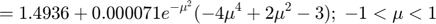

INSTITUTO POLITÉCNICO NACIONAL
UNIDAD PROFESIONAL INTERDISCIPLINARIA EN INGENIERÍA Y TECNOLOGÍAS AVANZADAS
SEÑALES Y SISTEMAS
Práctica 4 'Convolución y Correlación de señales en tiempo continuo'
Profesor: Dr. Rafael Martinez Martinez
Integrantes del equipo:
- Arenas Caldera Axel Jacobo
- Islas Martinez Porfirio Ezequiel
- Angeles Cornejo Maria de los Angeles
- Moreno Pilar Yael Maximiliano
Grupo 2TV1
Objetivos:
- Conocer métodos básicos de integración
- Manipilación dde instrucciones en MATLAB
- Simular convoluciones y correlaciones de señales contínuas
Contents
- Introducción
- Fórmulas cerradas de Newton-Cotes
- Regla del trapecio Compuesta
- Regla de Simpson 1/3
- Regla de Simpson
- Regla de los tres octavos de Simpson
- Fórmulas cerradas de Newton-Cotes compuestas
- Regla compuesta del trapecio
- Regla compuesta de Simpson
- Ejemplo
- Regla compuesta del trapecio
- Regla compuesta de Simpson
- Cuadratura gaussiana
- Ejercicio 1
- Ejercicio 2
- Ejercicio 3
- Ejercicio 4
Introducción
- Introducción
- Fórmulas cerradas de Newton-Cotes
- Regla del trapecio Compuesta
- Regla de Simpson 1/3
- Regla de Simpson
- Regla de los tres octavos de Simpson
- Fórmulas cerradas de Newton-Cotes compuestas
- Regla compuesta del trapecio
- Regla compuesta de Simpson
- Ejemplo
- Regla compuesta del trapecio
- Regla compuesta de Simpson
- Cuadratura gaussiana
- Ejercicio 1
- Ejercicio 2
- Ejercicio 3
- Ejercicio 4
Métodos numéricos de integración El área definida por la función $ Una recta L1[(a,0), (a, f (0) ) ], la recta L2[ (b,0), (b, f(b) )] y la recta L3[ (a,0), (b,0) ] el teorema fundamental del cálculo (en una de sus versiones). Si f es integrable**, y tiene antiderivada
que es , entonces.
Ahora, encontrar la antiderivada F a veces resulta ser muy complicado o imposible, es por eso que existen las técnicas de integración:
- Cambio de variable.
- Integración por partes
- Por sustitución Trigonometrica
Pero, ¿quién es (la antiderivada)? La respuesta es que no existe como función elemental; por tanto por los métodos tradicionales no se puede hallar la integral de esta función. Obteniendo un polinomio lo suficientemente cercano a la función original, resultará que integrar f(x) o P(x) nos daría un valor numérico muy aproximado, obviamente con un pequeño error.
La técnica que se utiliza para integrar en este caso es por medio de aproximación a la función mediante polinomios lo suficientemente parecidos (con el menor error posible) e integrarlos.
Fórmulas cerradas de Newton-Cotes
- Se piensa que la función a integrar es derivable un determinado número de veces, la derivada es continua.
- Por teoría de Lagrange, la función se puede expresar como un polinomio de grado n, que va a coincidir con la función en determinados puntos más un término de error.
con y
Si se integra, se tiene la fórmula cerrada de (n+1) puntos de Newton-Cotes. (Ver gráfica). Donde por regla general:
- -- (paso)
- con
Dependiendo el grado n del polinomio, se obtiene lo que se conoce como Regla del trapecio (n=1) o primer fórmula cerrada de Newton-Cotes, Regla de Simpson (n=2) o segunda fórmula cerrada de Newton-Cotes, y Regla de los tres octavos de Simpson (n=3).
Regla del trapecio Compuesta
Es una generalización de la regla de trapecio para obtener una mejor aproximación de la integral y consiste en subdividir el intervalo en subintervalos, todos de la misma longitud . Se aplica la fórmula $ \int_a^b f\left( x \right)dx \approx \frac{h}{2}\left[ {f\left( a \right) + 2\mathop \sum \limits_{k = 1}^{n - 1} f\left( {{x_k}} \right) + f\left( b \right)} \right]$.
Regla de Simpson 1/3
Método de integración para calcular integrales definidas donde se conectan grupos sucesivos de tres puntos sobre la curva mediante parábolas de segundo grado. A las fórmulas que resultan de calcular la integral bajo estos polinomios se les llama Reglas de Simpson. Se utiliza la fórmula Con %
Regla de Simpson
con
Regla de los tres octavos de Simpson
con
Fórmulas cerradas de Newton-Cotes compuestas
Son una extensión de las fórmulas cerradas de Newton-Cotes, en las que una función se divide en múltiples intervalos y no solo uno, y a cada intervalo se le aplica la regla del trapecio, de Simpson, de tres octavos de Simpson, etcétera.
Regla compuesta del trapecio
- - número de subintervalos
- - paso
Regla compuesta de Simpson
- par - número de subintervalos
- - paso
Ejemplo
Continuando con el ejemplo anterior, tenemos lo siguiente:
Regla compuesta del trapecio
- $
Regla compuesta de Simpson
- $

Cuadratura gaussiana
Las fórmulas cerradas de Newton-Cotes son solo fórmulas de cuadratura, estas tenían cierto grado de exactitud, dependiendo del grado del polinomio de interpolación de Lagrange. En este caso se utilizan polinomios de Legendre para aproximar integrales de funciones que satisfagan cierta cantidad de error (el error sea el mínimo) esto es lo que se conoce como cuadratura gaussiana. Los polinomios de Legendre se definen entre -1 y 1 y son
Estos polinomios son interesantes, ya que en el intervalo -1 a 1 tienen cierta simetría y son ortogonales. Esto nos da el siguiente resultado:
Si tenemos:
- - polinomio de Legendre de grado n
- raíces de
Entonces:
- y con grado menor que .
Resultado que se traduce en la aproximación numérica de una integral de -1 a 1 de cualquier función:
Los coeficientes y las raíces de los polinomios de Legendre, ya vienen especificados en tablas, y solo es necesario sustituir los valores en la fórmula dependiendo de la funciòn que se quere integrar y del grado del polinomio de Legendre que se quiera trabajar.
Si se quiere integrar sobre cualquier intervalo, se necesita previamente realizar una equivalencia entre una integral definida en cualquier intervalo y una definida entre -1 y 1, y entonces calcular la aproximación por cuadratura gaussiana a la nueva integral definida entre -1 y 1. Esta equivalencia es la siguiente y se halla mediante cambios de variable:
Con el ejemplo que estábamos tratando, la integración de hace de -1 a 1, por lo tanto no se necesita ningún ajuste. La integral quedaría así (utilizando las raíces y coeficientes de polinomios de Legendre escritos en tablas):
Para n=2:
Para n=3:
Ejercicio 1
a)Analítico
figure subplot(1,3,1) syms t x=piecewise(t<0,0,0<t<1,-t+1,1<t<2,t-1,t>2,0); fplot(x,[-1,3],'r') grid on title('x(t)') axis([-1 3.6 -2 2]); subplot(1,3,2) h=piecewise(t<0,0,0<t<1,1,t>1,0); fplot(h,[-1,3],'r') grid on title('h(t)') axis([-1 3.6 -2 2]); t1=0:0.01:1; t2=1:0.01:2; t3=2:0.01:3; subplot(1,3,3) plot(t1,(((-t1.^2)/2)+t1)); hold on plot(t2,(t2.^2)-(3.*t2)+(5/2)); plot(t3,((-t3.^2)/2)+(2.*t3)-(3/2)); grid on title('x(t)*h(t)') axis([-1 4 -0.1 0.6]);
b)Calculado por MATLAB
x=@(t)(-t+1).*(t>=0 & t<1)+(t-1).*(t>=1 & t<2); h=@(t)(1).*(t>=0 & t<1); convconm(x,h);
Undefined function 'convconm' for input arguments of type 'function_handle'. Error in SySPrac04AxelArenas (line 273) convconm(x,h);
Ejercicio 2
a)Analítico
figure subplot(1,3,1) syms t x=piecewise(t<0,0,0<t<1,t,1<t<2,1,t>2,0); fplot(x,[-1,3],'r') grid on title('x(t)') axis([-1 3.6 -1 1.5]); subplot(1,3,2) h=piecewise(t<1,0,1<t<3,1,t>3,0); fplot(h,[-1,4],'r') grid on title('h(t)') axis([-1 4 -1 1.5]); t1=1:0.01:2; t2=2:0.01:3; t3=3:0.01:4; t4=4:0.01:5; subplot(1,3,3) plot(t1,(((t1.^2)/2)-t1+(1/2))); hold on plot(t2,(t2)-(3/2)); plot(t3,((-t3.^2)/2)+(3.*t3)-(3)); plot(t4, 5-(t4)); grid on title('x(t)*h(t)') axis([-1 6 -0.1 1.5]);
b)Calculado por MATLAB
x=@(t)(1).*(t>=1 & t<3); h=@(t)(t).*(t>=0 & t<1)+(1).*(t>=1 & t<2); convconm(x,h);
Ejercicio 3
a)Analítico
figure subplot(1,3,1) syms t x=piecewise(t<0,0,0<=t<3,1,3<t<=4,-1,t>4,0); fplot(x,[-0.25,4.25],'r') grid on title('x(t)') axis([-1 6 -1.5 1.25]); subplot(1,3,2) h=piecewise(t<0,0,0<=t<3,1,3<t<=4,-1,t>4,0); fplot(h,[-0.25,4.25],'r') grid on title('x(t)') axis([-1 6 -1 2]); t1=-4:0.01:-3; t2=-3:0.01:-1; t3=-1:0.01:0; t4=0:0.01:1; t5=1:0.01:3; t6=3:0.01:4; subplot(1,3,3) plot(t1,(-t1-4)) hold on plot(t2,(t2+2)) plot(t3,(3*t3+4)) plot(t4,(-3*t4+4)) plot(t5,(-t5+2)) plot(t6,(t6-4)) grid on title('Autocorrelación x(t)*x(-t)') axis([-4.75 4.75 -1.25 4.25]);
b)Calculado por MATLAB
g = @(t)((t>=0&t<=3)-2.*(t>=3&t<=4)+(t>=3&t<=4)) f = @(t) -(-(t<=0&t>=-3)+2.*(t<=-3&t>=-4)-(t<=-3&t>=-4)) convconm(g,f)
Ejercicio 4
a)Analítico
figure subplot(1,3,1) syms t x=piecewise(t<0,0,0<t<3,1,3<t<4,-1,t>4,0); fplot(x,[-2,6],'r') grid on title('x(t)') axis([-1.5 5 -1.5 1.5]); subplot(1,3,2) h=piecewise(t<0,0,0<t<3,1,3<t<4,-1,t>4,0); fplot(h,[-2,6],'r') grid on title('h(t)') axis([-1.5 5 -1.5 1.5]); t1=-4:0.01:-3; t2=-3:0.01:-2; t3=-2:0.01:-1; t4=-1:0.01:0; t5=-0:0.01:1; t6=1:0.01:2; t7=2:0.01:4; subplot(1,3,3) hold on plot(t1,-t1-4); plot(t2,t2+2); plot(t3,3.*t3+6); plot(t4,-t4+2); plot(t5,-3.*t5+2 ); plot(t6,-t6); plot(t7,t7-4); grid on title('Autocorrelación') axis([-5 5 -2.25 3.25 ]);
b)Calculado por MATLAB
g = @(t)((t>=0&t<=2)-2.*(t>=2&t<2)-(t>=2&t<=4)) f = @(t) -(-(t<=0&t>=-3)+2.*(t<=-3&t>=-4)-(t<=-3&t>=-4)) convconm(g,f)